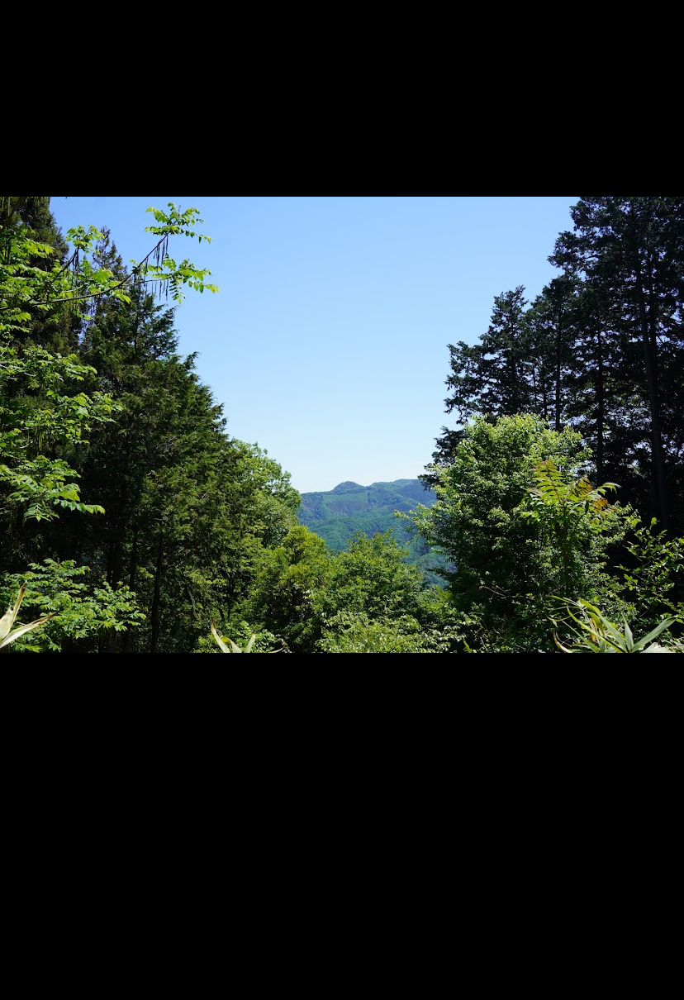

Personal
A bit of my past. I was born in California, and then moved to live on the East Coast for a while. I then lived in Japan briefly, and then moved back to the East Coast. I am actually a quarter Japanese, but it's not very apparent.
Growing up I did swimming, piano, and kickboxing, and have a second degree black-belt in taekwondo (although this was a while ago). I played violin for about 4 years, but never got good, and piano for about 5 ish years; piano was a bit better, and I performed in a few recitals.
My first job was at a local Chinese restaurant. I hated it at first, but learned a lot and grew to love the people. This first highschool job was likely the most important single decision in my life; it made me interested in learning Mandarin, which led to an interested in neuroscience and linguistics, ultimately leading to my current career path. I will never forget my first boss; she was incredibly supportive and kind.
Before I die, I'd like to bring four languages to fluency (English, Japanese, Mandarin, and German), reach 100 million in investments by depositing about a third of each paycheck, and give monthly to education, charities, and space exploration.
And at the time of death, I hope to still be physically and mentally fit, and to at least have some people there. Doesn't have to be a party, but should be a bit more uplifting than a funeral.
Jazz is my favorite genre. I like Coltrane (this and this). I also like classical and hip-hop. I don't often listen to music with voices in it these days, but recently got into Steely Dan.
My favorite genre is sci-fi. See books I read.
Sleep, diet, and exercise are critical. I think motivation and success are direct products of how much you sleep, eat, and exercise. I used to wake up around 4:00AM and go to bed around 8:00PM. Recently it's more like 5/6AM to 9/10PM.
- Favorite color movie: Inception
- Favorite black and white movie: Twelve Angry Men
- Favorite TV show: The Twilight Zone or Legend of the Galactic Heroes
- Personality: 古畑任三郎 — kind, good sense of humor